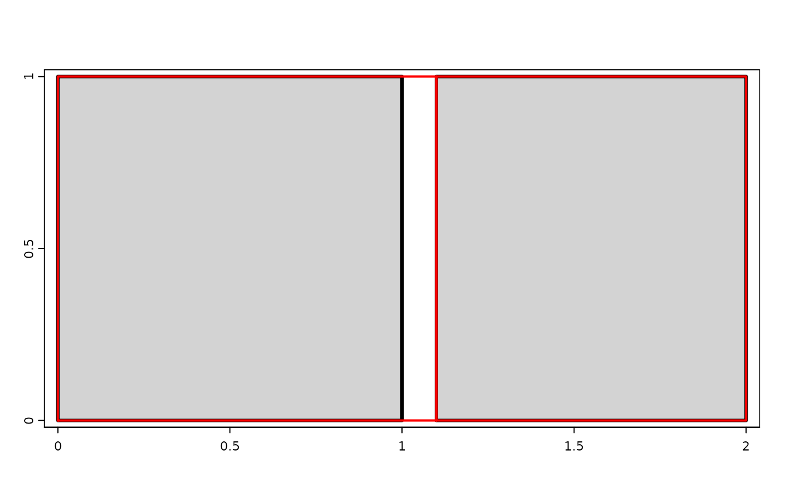

Vector topology methods
topology.RdmakeNodes create nodes on lines
mergeLines connect lines to form polygons
removeDupNodes removes duplicate nodes in geometries and optionally rounds the coordinates
emptyGeoms returns the indices of empty (null) geometries. is.na also checks if any of the coordinates is NA.
snap makes boundaries of geometries identical if they are very close to each other.
Usage
# S4 method for class 'SpatVector'
mergeLines(x)
# S4 method for class 'SpatVector'
snap(x, y=NULL, tolerance)
# S4 method for class 'SpatVector'
removeDupNodes(x, digits = -1)
# S4 method for class 'SpatVector'
makeNodes(x)Examples
p1 <- as.polygons(ext(0,1,0,1))
p2 <- as.polygons(ext(1.1,2,0,1))
p <- rbind(p1, p2)
y <- snap(p, tol=.15)
plot(p, lwd=3, col="light gray")
lines(y, col="red", lwd=2)
